Applied AI Systems
Multi-agent architecture, retrieval, local-model evaluation, and research tools that make complex model behaviour easier to inspect.
AI researcher working across intelligent systems and the built environment.
Exploring multi-agent AI, building-energy research, and creative experiments in music and astrology.
Multi-agent architecture, retrieval, local-model evaluation, and research tools that make complex model behaviour easier to inspect.
Simulation-informed modelling, HVAC prediction, clustering, and explainability for the built environment.
Interactive demos, dashboards, workshops, and evidence-aware stories that connect technical work with people.
Technical ideas made legible through workshops, talks, and community events.
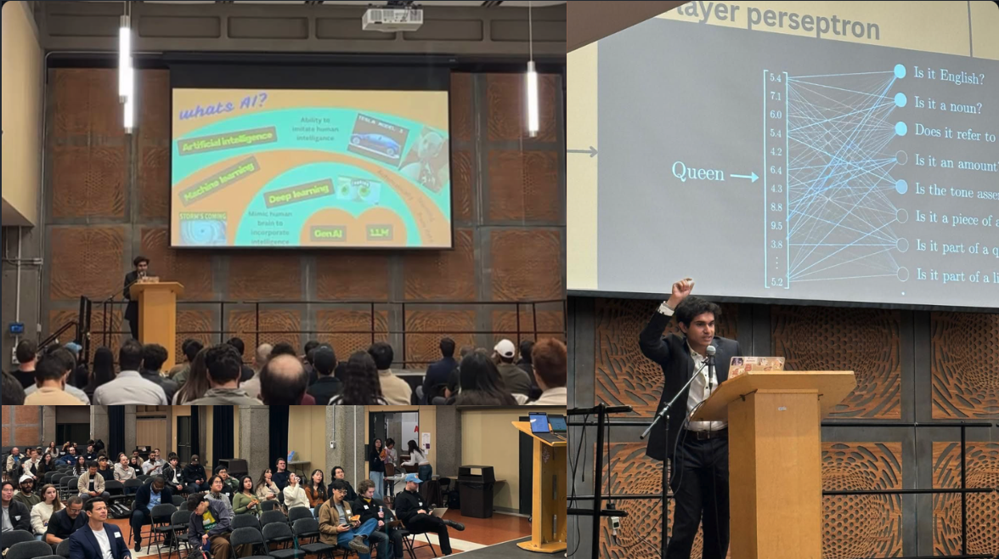
A practical map of AI beyond language models: supervised and unsupervised learning for structure, RAG for factual grounding, and agents for planning, memory, and action. A playful embedding-space example showed how relationships in meaning space can help explain one path to model hallucination.
View event recap on LinkedIn ↗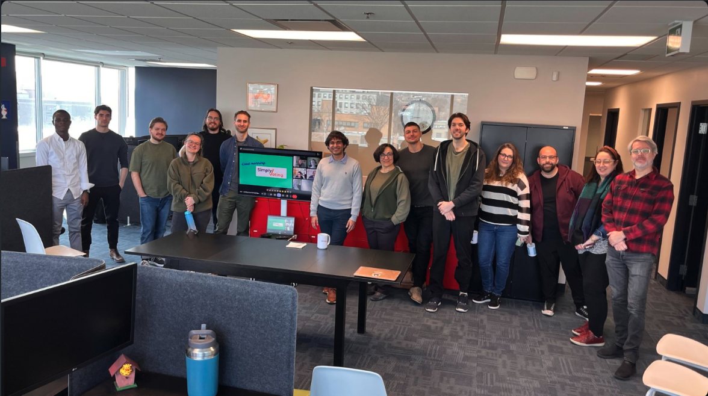
A company workshop covering data and ML fundamentals, transformer architecture, retrieval-augmented generation, and the profile–memory–planning–action model of AI agents. Teams finished by sketching real automation ideas, from sales workflows to office-fridge assistance.
View workshop recap on LinkedIn ↗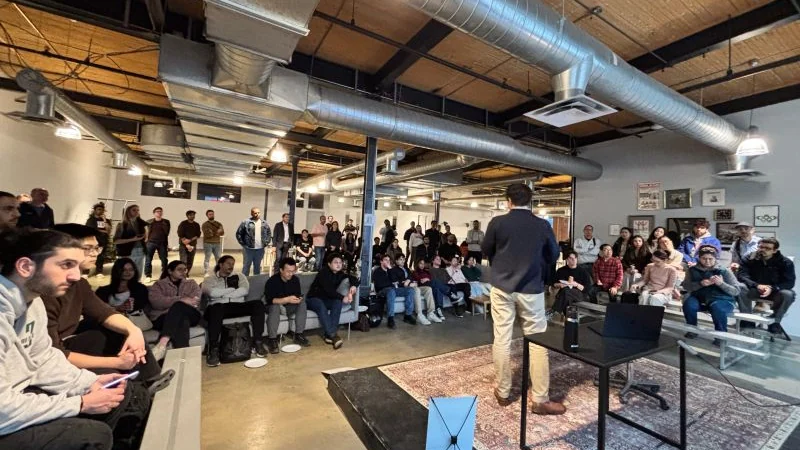
View event post ↗Hosted with Deck and guest speaker Artem Avdacev on what makes a product AI-native. The discussion focused on building trust through small validated steps, then using context and memory systems to improve products over time.
View event recap on LinkedIn ↗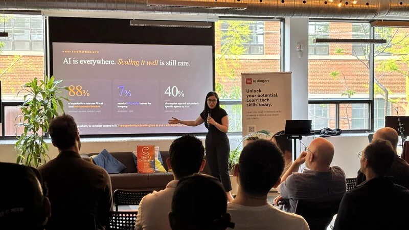
View event post ↗A completed community event about how product teams, marketers, designers, founders, and operators are increasingly working with data and prompts—not only technical specialists. The LinkedIn recap captures the room, Sarra Kallel’s talk, and the event’s practical framework for clearer prompting.
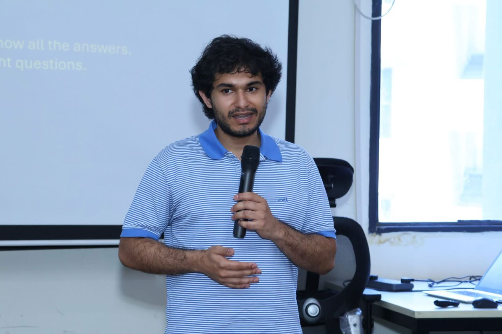
View event post ↗Presented on local-LLM hallucination mitigation through agent comparison at a day of AI, quantum-computing, and real-world adoption discussions. Sessions also explored quantum systems, production AI-agent evaluation, and responsible AI practice.
View event recap on LinkedIn ↗Working experiments hosted on Hugging Face Spaces. Each card launches the real interface; a sleeping Space may take a moment to wake.
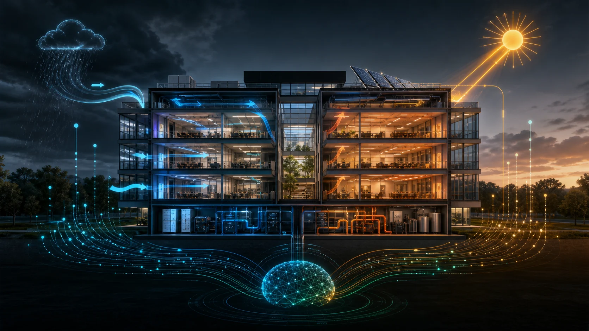
Concept visual Building & Energy ML Building Energy Predictor Change weather and seasonal inputs to test an LSTM-based HVAC energy forecast. The interface exposes the scenario controls, predicted load, and recent trend so model behaviour can be explored rather than treated as a black box. Hosted on Hugging Face · may wake on launch Launch demo Concept visual Building Intelligence Building Archetype Semantic Search Describe a building in plain language—such as an old Montréal house or a BACnet office—and retrieve ranked matches from 100 archetypes. FAISS finds semantic candidates, SQLite returns the full records, and a metadata reranker explains why each result matched. This prototype is retrieval-only; it does not forecast or control buildings. Hosted on Hugging Face · may wake on launch Launch demo Concept visual Applied AI Systems Multi-Agent System Explore 199 stored agent responses across tasks and local models. Rotate a three-dimensional embedding space, compare clusters, inspect neighbouring responses, and see where agent strategies converge or diverge. Hosted on Hugging Face · may wake on launch Launch demo Concept visual Creative Inquiry Astrology with TinyLlama Enter birth details to calculate planetary positions and a chart wheel, then examine a TinyLlama-assisted interpretation. It is framed as a creative AI experiment—not scientific evidence or personal guidance. Hosted on Hugging Face · may wake on launch Launch demoSemantic search across project knowledge using cosine and Euclidean similarity. This module is not yet a live demo.
Research systems, local AI infrastructure, data products, and visual research communication.
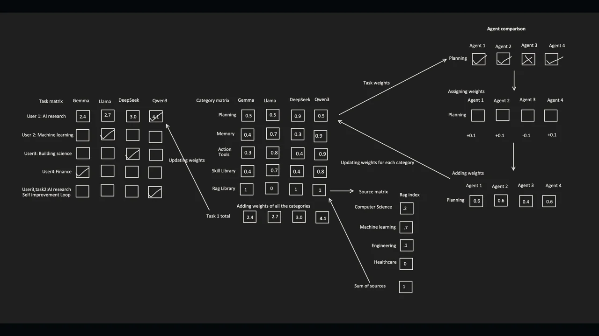
GitHub · ResearchA local-model comparison and agent-routing framework evolved from hallucination-mitigation research. It stores responses in FAISS, studies semantic agreement with PCA and KMeans, and weighs task fit, consensus, runtime, and energy to favour the leanest capable model.
View on GitHub ↗A work-in-progress, privacy-first desktop automation layer. It captures screen context, extracts text and interface elements, asks a local or remote model to plan, and executes approved actions through input controls, APIs, or scripts with replayable logs and memory.
View on GitHub ↗The Apple-side node of AIOS: a SwiftUI app for macOS and iOS that unifies local MLX, Apple Intelligence, and Core ML backends, while connecting securely to the AIOS hub for devices, scenes, topology, and natural-language commands.
View on GitHub ↗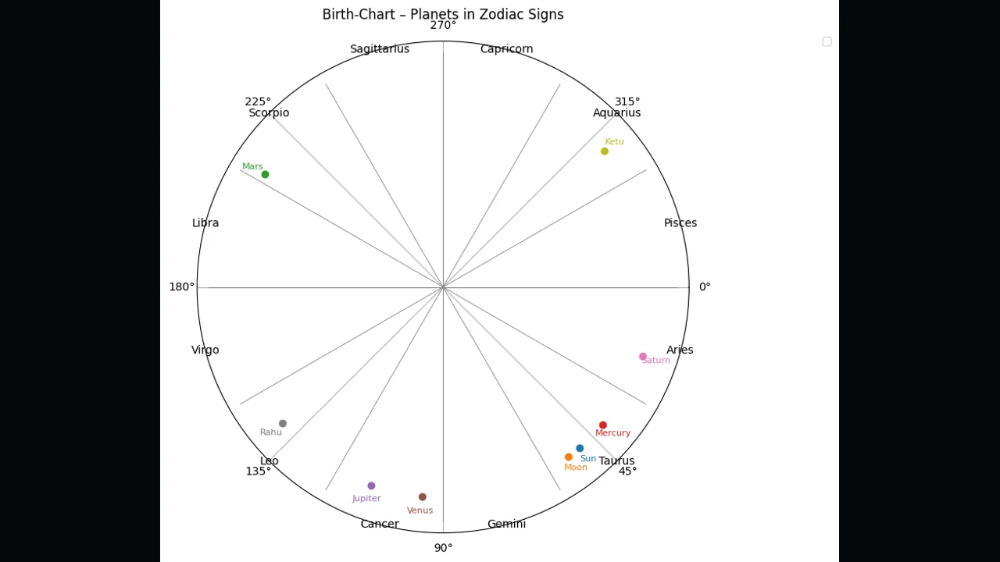
GitHub · Creative InquiryA command-line creative experiment that calculates planetary longitudes and the Ascendant with Swiss Ephemeris, draws an optional chart wheel, and passes a structured summary to a local TinyLlama model for interpretation.
View on GitHub ↗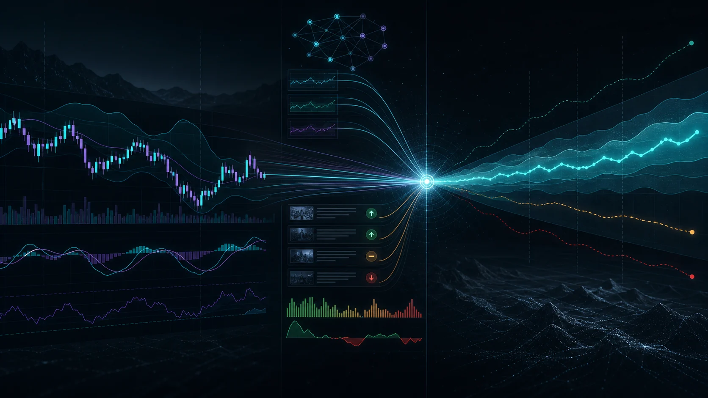
Concept visual GitHub · FinanceA NIFTY 50 forecasting pipeline combining Prophet, logistic regression, random forest, technical indicators, India VIX, and VADER sentiment from financial headlines, followed by a risk-controlled strategy simulation.
View on GitHub ↗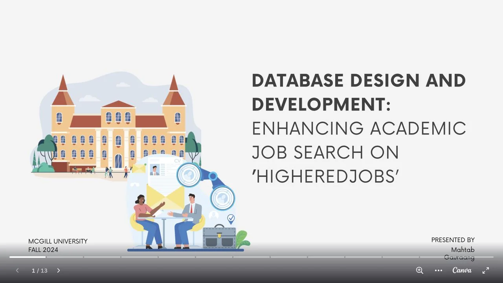
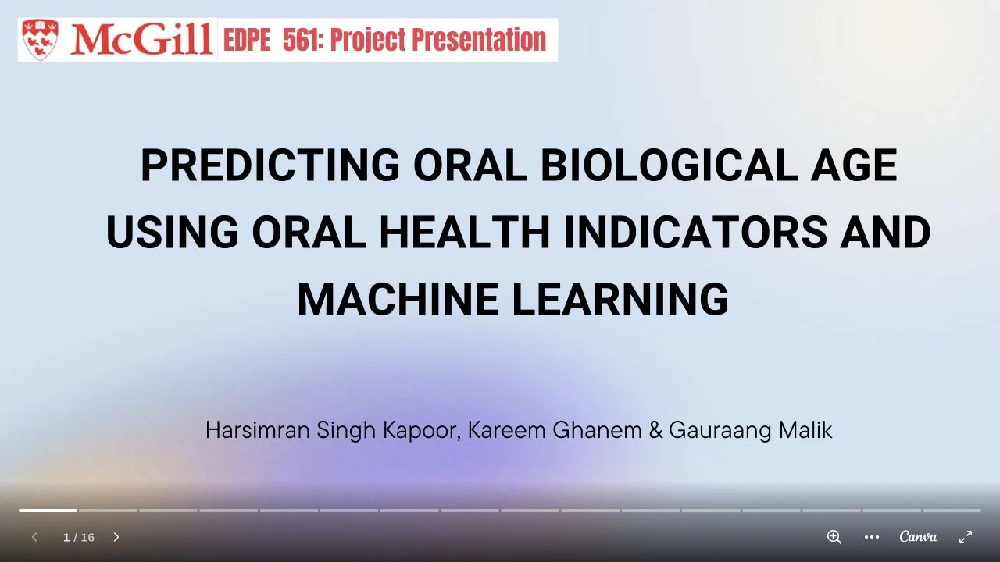
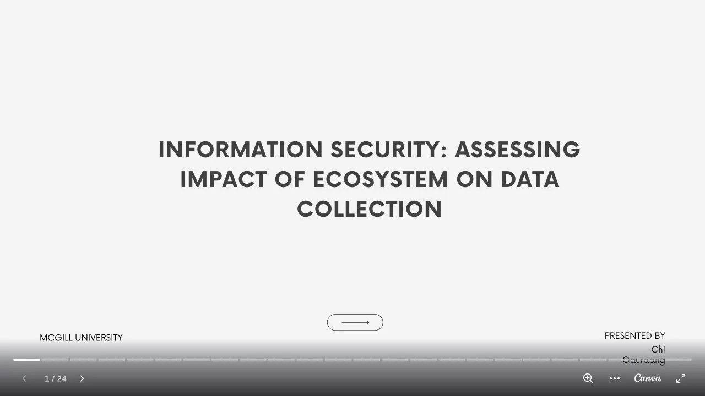

Gauraang is a Building Engineering PhD researcher, McGill graduate, and founder of Le Laboratoire Kalkin.
The work connects intelligent systems, buildings, research practice, culture, music, and playful experiments such as astrology.
Evidence boundary: research claims require evidence; philosophy and creative inquiry offer questions, metaphors, and perspective rather than scientific proof.
gauraangmalik1@gmail.comWhatsAppLinkedIn Founder profile & CVLive availability straight from my calendar, so every slot you see is genuinely free. Meetings run on Google Meet, and times are shown in your own timezone.
Calendar not loading? Open the booking page directly, or email gauraangmalik1@gmail.com.